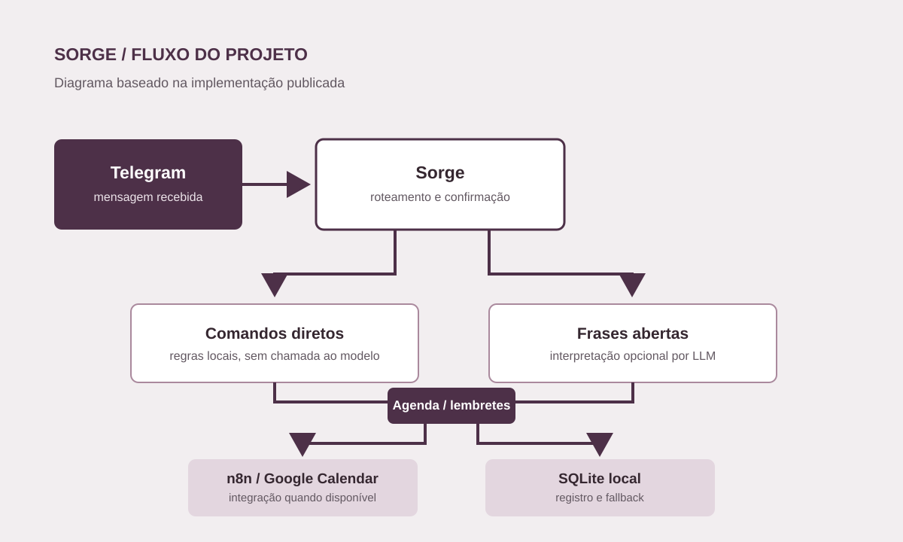

Sorge
Estou testando um assistente pessoal que resolve comandos simples por regras e usa um modelo apenas quando a mensagem pede interpretação. Ele registra eventos e lembretes localmente e pode integrar o calendário.

Sobre o projeto
O Sorge nasceu de uma pergunta prática: quantas mensagens de agenda precisam realmente passar por um modelo? Comandos como consultar o dia e verificar o estado do serviço podem seguir por regras locais. Frases abertas são encaminhadas a um interpretador que devolve dados estruturados para revisão.
O gateway recebe mensagens de uma conta autorizada no Telegram. O projeto guarda histórico e eventos em SQLite, programa lembretes e prevê uma integração com n8n e Google Calendar. Se essa integração não responder, o fluxo usa o banco local.
O código inclui testes para roteamento, persistência, lembretes e clientes externos simulados. Ainda preciso validar o fluxo completo em uso contínuo, especialmente o que acontece com eventos criados durante uma falha da integração e como eles voltam ao calendário. O serviço roda no meu computador, mas mensagens do Telegram e chamadas a provedores externos passam por esses serviços quando usados.
Notas de desenvolvimento
- Separar comandos previsíveis de mensagens que exigem interpretação.
- Guardar eventos e histórico localmente.
- Tratar falhas de integração sem perder a noção do que foi sincronizado.
Ferramentas
- Python
- Telegram
- SQLite
- n8n
- Google Calendar
- Pytest